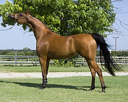

Коњи су разноврсна породица сисара из реда копитара, у којој се налази само један савремен род, Equus, и 41 изумрли род. У ову породицу спадају животиње које се обично називају коњима, магарцима и зебрама. Разграничење појединих врста је још и данас спорно. Домаћи коњ и домаћи магарац, доместификовани облици дивљих коња односно афричких дивљих магараца, и данас имају важну улогу као јахаће и теглеће животиње и распрострањени су у целом свету.
Иако се коњи могу срести како пасу и по дану, то су ипак животиње активне претежно у сумрак и ноћу. Код неких врста, као на пример код Гревијевих зебри и афричких дивљих магараца, мужјаци запоседају „своју“ територију за парење који може бити и већи од 10 km², што је највећа позната територија код свих биљоједа. Иако се неке животиње окупљају у групе, код ових животиња нема трајних веза међу одраслима. Код неких врста, (као, нпр. дивљи коњ Пшевалског, брдске и степске зебре) мужјаци бдију над крдом које предводи женка. У том случају може доћи до окупљања већих крда са утврђеном хијерархијом. Споразумевају се са другим јединкама гестовима, начином како држе уши, вилице и реп, али и гласом.
Скотност код коња траје између 330 и 410 дана, најдуже код гревијевих зебри, најкраће код домаћих коња. На свет долази у правилу само једно младунче. Оно је релативно тешко (достиже између 9 и 13% масе мајке) и врло развијено, тако да већ који сат након доласка на свет може следити мајку. Након 0,5 и 1,5 година младунче престаје сисати. Полна зрелост наступа у доби од три до шест година, при чему се мужјаци, због социјалне структуре, могу размножавати у каснијој доби од женки. У природи је најдужи животни век коња око 40 година, док домаћи коњи могу доживети скоро 60 година.